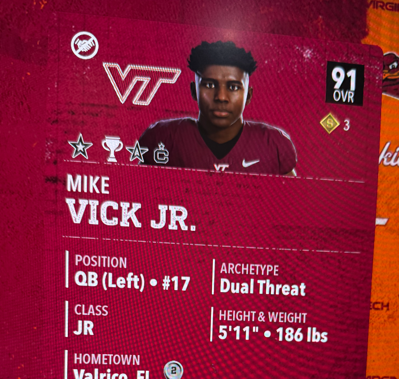
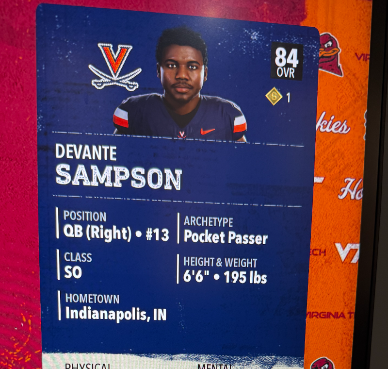

QB | Virginia Tech | 91 OVRMike Vick Jr.
Left-handed dual threat. 3,892 season passing yards, 44 TD, 15 INT. Week 12: 296 yards, 4 TD, 1 INT.
Players shaping the Week 13 rivalry story.

QB | Virginia Tech | 91 OVRLeft-handed dual threat. 3,892 season passing yards, 44 TD, 15 INT. Week 12: 296 yards, 4 TD, 1 INT.
National Offensive Player of the Week after 10 catches, 190 yards, and 4 TD.

QB | Virginia | 84 OVR6-foot-6 pocket passer. 2,932 passing yards, 25 TD, 8 INT entering the Commonwealth Clash.
55 catches, 796 yards, 9 TD. A key explosive option for the Cavaliers.
173 carries, 914 rushing yards, 12 TD. Virginia's pace-control lever.
84 catches, 1,272 yards, 16 TD. Another reason defenses cannot overcommit to Woodside.